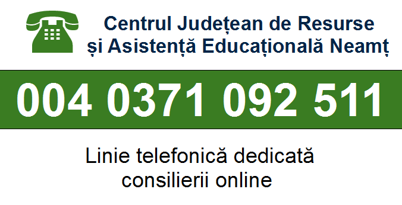
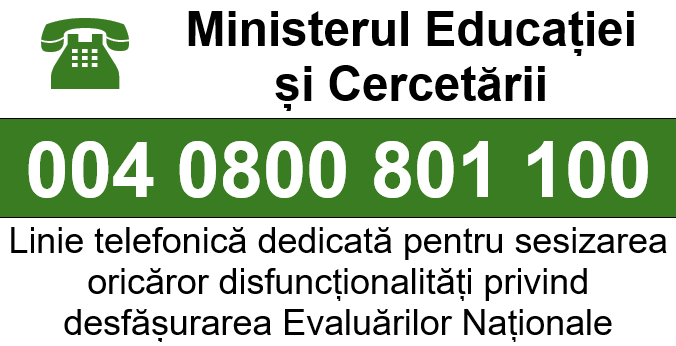
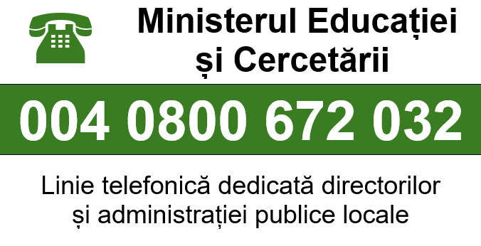

Clasă pregătitoare
Această secțiune cuprinde informații despre clasa pregătitoare.
Elevi:
Această secțiune cuprinde o imagine reprezentativă pentru clasa pregătitoare.

Prezentare
Această secțiune cuprinde o scurtă prezentare a educației primare.
Clasa pregătitoare:
Clasa pregătitoare reprezintă „linia fină dintre inocenţa grădiniţei şi seriozitatea şcolii”, fiind prima etapă din învăţământul primar şi oferind un start mai bun în viaţa şcolară.
Programa școlară de la clasa pregătitoare urmăreşte atât dezvoltarea capacităţii copilului de a-şi comunica propriile idei, opinii, gânduri şi sentimente, într-un mod accesibil, cât şi apropierea de lumea cărţilor, de mijloacele de informare şi nu în ultimul rând, de ceilalţi copii.
Clasa pregătitoare are rolul de a facilita integrarea copiilor la şcoală, reprezentând un an extra de învăţământ special, care face tranziţia de la grădiniţă la şcoală. Copiii vor învăţa să fie mai responsabili şi ce înseamnă un program școlar fix. Clasa pregătitoare are un dublu rol: pe de o parte de consolidare a cunoştinţelor deja dobândite şi, pe de altă parte, de socializare şi adaptare la schimbare. În clasa pregătitoare, copiii îşi formează abilităţi în comunicare, atenţie, limbaj, dezvoltare cognitivă, fizică şi socio-emoţională. Ei reușesc să se adapteze la situaţii noi, să stabilească relații cu copiii de vârsta lor, să gândească logic, să-și gestioneze singuri timpul și efortul.
La clasa pregătitoare, activitatea instructiv-educativă este o aventură fascinantă, care le stârnește copiilor curiozitatea şi atenția. Copiii învaţă prin joc, care este valorificat ca modalitate de abordare în toate disciplinele, prin sarcini individuale, prin sarcini în perechi, în grupuri mai mici sau cu întregul colectiv. Sunt folosite materiale speciale, auditive, vizuale şi tactile, ce ajută la memorizarea informaţiilor.
Procesul de învățare la clasa pregătitoare este modelat de cadrul didactic astfel încât toate informațiile transmise să fie înțelese de elevii clasei. Acesta folosește metode diferite pentru fiecare nivel/personalitate pentru a realiza cu succes procesul de învățare.
Scurtă descriere a învățământului primar
Această secțiune conține o scurtă descriere a învățământului primar.
Descriere:
Condiții de înscriere în învățământul primar
Părinții ai căror copii au urmat învățământul preșcolar și care împlinesc în anul curent vârsta de 6 ani până la data de 31 august inclusiv au obligația de a înscrie copiii în învățământul primar în clasa pregătitoare.
Părinții ai căror copii împlinesc în anul curent vârsta de 6 ani în perioada 1 septembrie ‒ 31 decembrie inclusiv pot să își înscrie copiii în învățământul primar, în clasa pregătitoare, dacă nivelul lor de dezvoltare este corespunzător. În situația copiilor care au frecventat grădinița, înscrierea în clasa pregătitoare se face la solicitarea scrisă a părinților, în baza recomandării eliberate de unitatea de învățământ cu nivel preșcolar. Evaluarea dezvoltării copiilor se efectuează de către centrele județene de resurse și asistență educațională doar în situația copiilor care nu au frecventat grădinița sau care s-au întors din străinătate.
La cererea scrisă a părinților/reprezentantului legal, în cazuri justificate, înscrierea în clasa pregătitoare a copiilor care împlinesc vârsta de 6 ani până la data de 31 august a anului în care se face înscrierea poate fi amânată cu maximum un an.
Alegerea unității de învățământ la care va fi înscris copilul
Toți copiii ai căror părinți solicită înscrierea în clasa pregătitoare la școala de circumscripție sunt înmatriculați la unitatea de învățământ solicitată. Conform metodologiei, școala de circumscripție reprezintă unitatea școlară aflată în proximitatea domiciliului/reședinței elevului.
Pe locurile libere se înscriu și, ulterior, se înmatriculează copiii care provin din alte circumscripții școlare, inclusiv din alte localități.
În situația în care într-o unitate de învățământ numărul cererilor de înscriere primite de la părinți al căror domiciliu se află în afara circumscripției școlare este mai mare decât numărul de locuri libere se aplică criterii de departajare generale și specifice.
Criteriile generale de departajare sunt următoarele:
‒ existența unui certificat medical de încadrare în grad de handicap a copilului;
‒ existența unui document care dovedește că este orfan de ambii părinți;
‒ existența unui document care dovedește că este orfan de un singur părinte;
‒ existența unui frate/unei surori înmatriculat/ înmatriculate în unitatea de învățământ respectivă.
Criteriile specifice de departajare sunt elaborate de fiecare unitate de învățământ și se aplică după aplicarea criteriilor generale. Acestea țin cont de faptul că toți copiii au drepturi egale de acces la educație, indiferent de condiția socială și materială, de sex, rasă, naționalitate, confesiune, și nu includ existența unor liste de preînscrieri, organizate în afara calendarului înscrierii, sau orice alte proceduri care nu respectă spiritul și litera metodologiei de înscriere a copiilor în învățământul primar.
Procedura de înscriere în învățământul primar
Dosarul de înscriere cuprinde următoarele documente, în copie:
‒ certificatul de naștere al copilului;
‒ certificatul de încadrare în grad de handicap a copilului, dacă este cazul;
‒ certificatul medical de tip A5 în care este specificat diagnosticul medical, dacă este cazul;
‒ certificatul pentru cerințe educaționale speciale ale copilului, dacă este cazul;
‒ actele de identitate ale părinților/reprezentantului legal;
‒ certificatul de căsătorie a părinților/tutorilor legali ai copilului, dacă este cazul;
‒ hotărârârea judecătorească definitivă de divorț din care să rezulte modul în care se exercită autoritatea părintească și unde a fost stabilită locuința copilului, dacă este cazul;
‒ declarație privind acceptul celuilalt părinte în caz de divorț și custodie comună a copilului;
‒ alte documente doveditoare care fac obiectul criteriilor generale sau specifice de înscriere și care sunt analizate în timpul procesului de înscriere.
‒ Dacă copilul a frecventat o grădiniță în care există cabinet medical școlar: fișa medicală de la grădiniță și adeverință medicală - eliberate de medicul școlar al grădiniței frecventate;
‒ Dacă copilul a frecventat o grădiniță în care nu există cabinet medical școlar: adeverința medicală de înscriere în colectivitate (împreună cu dovada de vaccinare a copilului) - eliberată de medicul de familie.
Dosarul de înscriere este însoțit de o cerere-tip de înscriere în care părintele/reprezentantul legal al copilului va alege, în prima etapă, înscrierea la școala de circumscripție sau o altă școală decât cea de circumscripție și, în a doua etapă, dacă este cazul, până la trei opțiuni cu privire la unitățile de învățământ pe care acesta le are în vedere pentru copil.
Cererea-tip de înscriere este completată și validată în Sistemul Informatic Integrat al Învăţământului din România de către membrul desemnat din cadrul comisiei de înscriere de la nivelul unității de învățământ, după certificarea conform cu originalul a copiilor documentelor depuse la dosarul de înscriere.
Cererea-tip de înscriere se poate completa și on-line, la adresa inscriere.edu.ro (doar pentru prima etapă de înscriere), transmite prin e-mail, prin poștă sau se poate depune la secretariatul unității de învățământ la care părintele dorește înscrierea copilului.
n situația completării on-line a cererii de înscriere sau a trimiterii prin e-mail sau prin poștă, părintele va transmite unității de învățământ o declarație-tip pe propria răspundere cu privire la veridicitatea informațiilor completate în cerere. Validarea cererii-tip de înscriere se face în Sistemul Informatic Integrat al Învăţământului din România la unitatea de învățământ la care părintele/reprezentantul legal solicită înscrierea de către membrul desemnat din cadrul comisiei de înscriere de la nivelul unității de învățământ, după certificarea conform cu originalul a copiilor documentelor depuse la dosarul de înscriere și constă în compararea datelor introduse în aplicația informatică cu documentele, în original, prezentate fizic de către părinte/reprezentant legal la secretariat, conform calendarului de înscriere.
În cazul în care cererea-tip de înscriere este completată pentru un copil care împlinește vârsta de 6 ani în perioada 1 septembrie - 31 decembrie inclusiv, părintele/reprezentantul legal anexează și o copie a recomandării de înscriere în clasa pregătitoare.
După încheierea perioadei de completare și validare a cererilor-tip de înscriere, cuprinderea copiilor în clasa pregătitoare se face în două etape:
‒ prima etapă, în care repartizarea copiilor se face pe baza informațiilor din cererile-tip de înscriere și din documentele depuse/transmise de părinți/reprezentanți legali, folosind aplicația informatică, și pe baza deciziilor consiliilor de administrație ale unităților de învățământ, luate în urma aplicării criteriilor de departajare pentru copiii din alte circumscripții școlare;
‒ a doua etapă, în care este asigurată înscrierea pe locurile libere a copiilor care nu au participat la prima etapă sau nu au fost distribuiți din diferite motive.
Prima etapă de înscriere în învățământul primar
În prima etapă, procesarea cererilor-tip de înscriere se desfășoară la Comisia națională de înscriere a copiilor în învățământul primar, cu ajutorul aplicației informatice, și la nivelul unităților de învățământ, pe baza informațiilor din cererile-tip de înscriere și din documentele depuse/transmise de părinți/ tutori legal/ instituiți/ reprezentanți legali.
Procesarea cererilor-tip de înscriere se face în ordine, respectând următoarele priorități:
‒ în prima fază sunt admiși la școala de circumscripție copiii ai căror părinți au solicitat acest lucru în cererea-tip de înscriere. Repartizarea acestora conform solicitării din cererea-tip de înscriere se realizează cu ajutorul aplicației informatice;
‒ în a doua fază se procesează cererile părinților care solicită înscrierea la o altă unitate de învățământ decât școala de circumscripție, pe locurile rămase libere. Admiterea sau respingerea cererilor acestora se realizează la nivelul comisiei de înscriere din unitățile de învățământ, prin aplicarea criteriilor generale și specifice de departajare, iar listele finale sunt validate de către consiliul de administrație al unității de învățământ;
‒ în a treia fază sunt admiși la școala de circumscripție copiii ai căror părinți au solicitat înscrierea la o altă unitate de învățământ decât școala de circumscripție, dar nu au fost înmatriculați, din lipsă de locuri. Repartizarea acestora se realizează cu ajutorul aplicației informatice, dacă în cererea-tip de înscriere a fost bifată opțiunea de înscriere la școala de circumscripție, în cazul neadmiterii la școala solicitată.
La încheierea primei etape de înscriere se consideră locuri disponibile, pe lângă locurile rămase neocupate după a doua fază de repartizare, și locurile copiilor din circumscripția școlară respectivă care au fost înmatriculați la o altă școală, în faza a doua de înscriere, sau care nu s-au înscris în nicio unitate de învățământ în această etapă.
Lista candidaților înmatriculați după prima etapă se afișează la fiecare unitate de învățământ și pe site-ul inspectoratului școlar. Lista conține numele și prenumele candidaților înmatriculați.
Locurile disponibile de la toate unitățile de învățământ din județ/municipiul București sunt afișate la fiecare unitate de învățământ care școlarizează clasa pregătitoare și pe site-ul inspectoratului școlar, pentru informarea părinților.
A doua etapă de înscriere în învățământul primar
Părinții copiilor care nu au fost cuprinși într-o unitate de învățământ în prima etapă de înscriere sau care nu au participat la această etapă completează o nouă cerere-tip de înscriere în cea de-a doua etapă, pentru locurile disponibile.
Cererile-tip de înscriere pot fi completate doar pentru unitățile de învățământ la care există locuri disponibile. Unitățile de învățământ care nu mai au locuri disponibile nu pot primi cereri-tip de înscriere în învățământul primar în etapa a doua, iar opțiunile online pentru aceste unități de învățământ sunt respinse de aplicația informatică.
În cererea-tip de înscriere pentru etapa a doua, părinții completează, în ordinea descrescătoare a preferințelor, maximum trei opțiuni pentru unități de învățământ la care mai există locuri disponibile.
Părinții depun/transmit cererea-tip de înscriere în învățământul primar on-line sau la secretariatul școlii aflate pe prima poziție din cele 3 opțiuni exprimate pentru etapa a doua.
Completarea cererii-tip de înscriere se face în perioada prevăzută de calendarul înscrierii pentru etapa a doua, prin introducerea în aplicația informatică a datelor furnizate de părinte. Validarea cererii-tip de înscriere se face la unitatea de învățământ aflată pe prima poziție din cele 3 opțiuni exprimate pentru etapa a doua.
După încheierea perioadei de completare și validare a cererilor-tip de înscriere depuse pentru a doua etapă de înscriere, unitățile de învățământ analizează și soluționează cererile părinților, aplicând o procedură specifică elaborată de inspectoratul școlar și aprobată de consiliul de administrație al inspectoratului școlar, pe baza criteriilor generale și a celor specifice de departajare, în limita locurilor disponibile.
La încheierea operațiilor menționate mai sus, conform Calendarului înscrierii în învățământul primar, se afișează lista cuprinzând numele și prenumele candidaților înmatriculați la fiecare unitate de învățământ.
Etapa de ajustări de înscriere în învățământul primar
În situația în care mai există copii care nu au fost încă înscriși la nici o unitate de învățământ, Inspectoratul Școlar Județean Neamț centralizează și soluționează cererile părinților/reprezentanților legali ai acestor copii, precum și orice altă situație referitoare la înscrierea în învățământul primar, având în vedere, cu prioritate, interesul superior al copilului.
Constituirea formațiunilor de elevi în clasa pregătitoare se face după finalizarea procesului de înscriere, conform calendarului, în baza Procedurii de distribuție aleatorie a elevilor în formațiunile de studiu, aprobate de Consiliul de Administrație, cu respectarea criteriilor de transparență, echitate, nondiscriminare și incluziune.
Interdicții și sancțiuni
Conform metodologiei, prezentarea de înscrisuri false la înscrierea în clasa pregătitoare se pedepsește conform legii și atrage pierderea locului obținut prin fraudă.
Persoanele vinovate de transcrierea eronată, deliberată, a datelor personale ale copiilor sau de nerespectarea prevederilor metodologiei vor fi sancționate disciplinar, administrativ, civil sau penal, după caz.
Se interzice unităților de învățământ de stat să instituie taxe sau să solicite părinților alte foloase pentru a realiza înscrierea copiilor în clasa pregătitoare.
Se interzice colectarea sau favorizarea acțiunii de colectare a unor fonduri materiale sau bănești de la părinții care solicită înscrierea copiilor în învățământul primar.
Personalul din învățământ care, în procesul de înscriere a copiilor în clasa pregătitoare, săvârșește fapte de natură penală sau care manifestă neglijență în îndeplinirea atribuțiilor ce îi revin este sancționat în conformitate cu prevederile legislației în vigoare.
În situația în care validarea cererii-tip de înscriere se face în baza declarației pe propria răspundere, părinții au obligația de a prezenta în format fizic documentele care au stat la baza înscrierii în învățământul primar în termen de maximum două săptămâni de la începerea cursurilor. Prezentarea de înscrisuri false se pedepsește conform legii și atrage pierderea locului obținut prin fraudă.
Potrivit articolului nr. 54 din metodologie, Comisia județeană, precum și comisiile de înscriere și distribuire a elevilor din unitățile de învățământ pot solicita autorităților în drept verificarea respectării prevederilor Ordonanței de Urgență a Guvernului nr. 97 din 14.07.2005 privind evidența, domiciliul, reședința și actele de identitate ale cetățenilor români.
Informații relevante:
- Cerere pentru amânarea înscrierii copilului în învățământul primar în anul școlar 2025-2026 (se deschide într-o nouă fereastră)
- Cerere-tip de înscriere în clasa pregătitoare -2025- ETAPA I (se deschide într-o nouă fereastră)
- Anexa nr. 3 la Ordinul Ministerului Educației nr. 4019 din 15.03.2024 Declarație pe propria răspundere privind cererea-tip de înscriere a copilului în învățământul primar (se deschide într-o nouă fereastră)
- Anexa nr. 2 la Ordinul Ministerului Educației nr. 4019 din 15.03.2024 Cerere pentru evaluarea nivelului de dezvoltare în vederea înscrierii copilului în anul școlar 2025-2026 în clasa pregătitoare (se deschide într-o nouă fereastră)
- Anexa nr. 1 la Ordinul Ministerului Educației nr. 4019 din 15.03.2024 Cerere pentru eliberarea recomandării de înscriere a copilului în anul școlar 2025-2026 în clasa pregătitoare (se deschide într-o nouă fereastră)
- Ordinul Ministerului Educației nr. 4019 din 15.03.2024 privind aprobarea Metodologiei de înscriere a copiilor în învățământul primar și a Calendarului înscrierii în învățământul primar pentru anul școlar 2024-2025 (se deschide într-o nouă fereastră)
- Ordinul Ministerului Educației și Cercetării nr. 3435 din 28.02.2025 privind aprobarea Calendarului înscrierii în învățământul primar pentru anul școlar 2025-2026 (se deschide într-o nouă fereastră)
Alte informații utile:
- Procedura specifică a Inspectoratului Școlar Județean Neamț nr. 5632 din 14.05.2025 de repartizare a copiilor, pe locurile disponibile, în a doua etapă de înscriere în învățământul primar pentru anul școlar 2025-2026 (se deschide într-o nouă fereastră)
- Adresa Inspectoratului Școlar Județean Neamț nr. 13070 din 10.10.2024 Obținerea Certificatului de orientare școlară și profesională de către copiii/elevii cu CES (se deschide într-o nouă fereastră)
- Adresa Inspectoratului Școlar Județean Neamț nr. 13038 din 09.10.2024 Prezența și atribuțiile facilitatorului în unitățile de învățământ unde sunt școlarizați copii/elevi cu cerințe educaționale speciale (se deschide într-o nouă fereastră)
- Ordinul comun al Ministerului Muncii, Familiei, Protecţiei Sociale și Persoanelor Vârstnice nr. 1985 din 04.10.2016, al Ministerului Sănătății nr. 1305 din 17.11.2016 și al Ministerului Educației Naționale și Cercetării Științifice nr. 5805 din 23.11.2016 privind aprobarea metodologiei pentru evaluarea şi intervenţia integrată în vederea încadrării copiilor cu dizabilităţi în grad de handicap, a orientării şcolare şi profesionale a copiilor cu cerinţe educaţionale speciale, precum şi în vederea abilitării şi reabilitării copiilor cu dizabilităţi şi/sau cerinţe educaţionale speciale (se deschide într-o nouă fereastră)
- Adresa Inspectoratului Școlar Județean Neamț nr. 13058 din 10.10.2024 Materiale pentru elevii cu tulburări specifice de învățare (se deschide într-o nouă fereastră)
- Ordinul Ministerului Educației Naționale nr. 3124 din 20.01.2017 privind aprobarea Metodologiei pentru asigurarea suportului necesar elevilor cu tulburări de învăţare (se deschide într-o nouă fereastră)
- Adresa Inspectoratului Școlar Județean Neamț nr. 13061 din 10.10.2024 Realizarea planului de servicii individualizat (se deschide într-o nouă fereastră)
- Adresa Inspectoratului Școlar Județean Neamț nr. 13040 din 09.10.2024 Școlarizarea la domiciliu (se deschide într-o nouă fereastră)
- Ordinul Ministerului Educaţiei Naţionale şi Cercetării Ştiinţifice nr. 5086 din 31.08.2016 pentru aprobarea Metodologiei-cadru privind şcolarizarea la domiciliu, respectiv înfiinţarea de grupe/clase în spitale (se deschide într-o nouă fereastră)
- Ordinul Ministerului Educației nr. 6583 din 04.09.2024 privind aprobarea Metodologiei de completare și valorificare a rapoartelor descriptive de evaluare a dezvoltării fizice, socioemoționale, cognitive, a limbajului și a comunicării, precum și a dezvoltării capacităților și atitudinilor de învățare la finalul clasei pregătitoare și al clasei I (se deschide într-o nouă fereastră)
- Ordinul Ministerului Educației nr. 6478 din 30.08.2024 Metodologie privind portofoliul educațional al preșcolarului și al elevului din învățământul preuniversitar (se deschide într-o nouă fereastră)
- Ordinul Ministerului Educației nr. 5707 din 01.08.2024 privind aprobarea Statutului elevului (se deschide într-o nouă fereastră)
- Ordinul Ministerului Educației nr. 6731 din 28.11.2023 privind aprobarea Profilului de formare a absolventului (se deschide într-o nouă fereastră)
Linii telefonice dedicate TelVerde
-
Număr TelVerde al Ministerului Educației și Cercetării - Linie telefonică dedicată consilierii psihologice pe tema CODID-19 pentru cadre didactice, elevi și părinți:
-
Număr TelVerde al Centrului Județean de Resurse și Asistență Educațională Neamț - Linie telefonică dedicată consilierii online:
 -
Număr TelVerde al Inspectoratului Școlar Județean Neamț - Linie telefonică dedicată înscrierii în învățământul preșcolar:
-
Număr TelVerde al Inspectoratului Școlar Județean Neamț - Linie telefonică dedicată înscrierii în învățământul primar:

-
Număr TelVerde al Inspectoratului Școlar Județean Neamț - Linie telefonică dedicată examenelor naționale:
-
Număr TelVerde al Ministerului Educației și Cercetării - Linie telefonică dedicată pentru sesizarea oricăror disfuncționalități privind desfășurarea Evaluărilor Naționale:
 -
Număr TelVerde al Ministerului Educației și Cercetării - Linie telefonică dedicată elevilor, studenților și părinților:
-
Număr TelVerde al Ministerului Educației și Cercetării - Linie telefonică dedicată directorilor și administrației centrale:

Legături utile:
-
Ministerul Educației și Cercetării(se deschide într-o nouă fereastră)
-
Inspectoratul Școlar Județean Neamț(se deschide într-o nouă fereastră)
-
 Centrul Județean de Resurse și Asistență Educațională Neamț(se deschide într-o nouă fereastră)
Centrul Județean de Resurse și Asistență Educațională Neamț(se deschide într-o nouă fereastră) -
 Casa Corpului Didactic Neamț(se deschide într-o nouă fereastră)
Casa Corpului Didactic Neamț(se deschide într-o nouă fereastră)